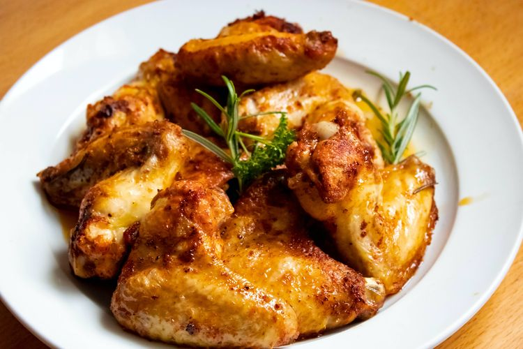

Menu Diet dan Nutrisi

AYAM PANGGANG DENGAN BUMBU LEMON DAN HERBA
Bahan-Bahan:
- - 4 potong dada ayam tanpa kulit
- - 2 sendok makan minyak zaitun
- - 1 sendok teh daun thyme kering
- - 1 sendok teh daun rosemary kering
- - 2 sendok makan air lemon
- - Garam dan lada hitam secukupnya
Cara Membuat:
- - Panaskan oven pada suhu 180°C.
- - Letakkan potongan dada ayam di atas loyang.
- - Campur minyak zaitun, thyme, rosemary, air lemon, garam, dan lada hitam dalam mangkuk kecil.
- - Olesi campuran bumbu di atas dada ayam.
- - Panggang dalam oven selama 25-30 menit atau hingga ayam matang dan berwarna kecoklatan.
- - Sajikan dengan sayuran panggang atau salad hijau.
SALAD SAYURAN DENGAN DRESSING BALSAMIC
Bahan-Bahan:
- - 4 cangkir campuran sayuran hijau (daun selada, bayam, arugula, dll.)
- - 1/2 cangkir tomat ceri, potong setengah
- - 1/4 cangkir kacang almond panggang, cincang
- - 2 sendok makan keju feta rendah lemak, crumbled
- - 2 sendok makan dressing balsamic rendah gula
Cara Membuat:
- - Campur semua sayuran dalam mangkuk besar.
- - Taburkan tomat ceri, kacang almond, dan keju feta di atasnya.
- - Siramkan dressing balsamic di atas salad sebelum disajikan.
IKAN PANGGANG DENGAN SALSA TOMAT
Bahan-Bahan:
- - 4 fillet ikan (pilih ikan yang kaya omega-3 seperti salmon)
- - 2 sendok makan minyak zaitun
- - 1 sendok teh bubuk bawang putih
- - 1 sendok teh bubuk paprika
- - Garam dan lada hitam secukupnya
Salsa Tomat:
- - 1 cangkir tomat segar, potong dadu
- - 1/4 cangkir bawang merah, cincang
- - 1 sendok makan cilantro cincang
- - 1 sendok makan sari lemon
- - Garam dan lada hitam secukupnya
Cara Membuat:
- - Panaskan oven pada suhu 200°C.
- - Campur minyak zaitun, bubuk bawang putih, bubuk paprika, garam, dan lada hitam.
- - Olesi campuran bumbu di atas fillet ikan.
- - Panggang dalam oven selama 15-20 menit atau hingga ikan matang.
- - Campur semua bahan salsa tomat dalam mangkuk.
- - Sajikan ikan panggang dengan salsa tomat di atasnya.
QUINOA BROKOLI PANGGANG
Bahan-Bahan:
- - 1 cangkir quinoa, direbus
- - 2 cangkir brokoli, potong kecil-kecil
- - 2 sendok makan minyak zaitun
- - 1 sendok teh bubuk bawang putih
- - Garam dan lada hitam secukupnya
Cara Membuat:
- - Panaskan oven pada suhu 200°C.
- - Campur brokoli dengan minyak zaitun, bubuk bawang putih, garam, dan lada hitam.
- - Panggang dalam oven selama 15-20 menit atau hingga brokoli matang.
- - Campurkan brokoli panggang dengan quinoa yang sudah direbus.
SALAD KUBIS BROKOLI
Bahan-Bahan:
- - 2 cangkir kubis merah, iris tipis
- - 1 cangkir brokoli, potong kecil
- - 1/4 cangkir keju cheddar rendah lemak, parut
- - 2 sendok makan mayones rendah lemak
- - 1 sendok makan cuka apel
- - Garam dan lada hitam secukupnya
Cara Membuat:
- - Campur kubis, brokoli, dan keju cheddar dalam mangkuk besar.
- - Dalam mangkuk kecil, campurkan mayones, cuka apel, mustard, garam, dan lada hitam.
- - Tambahkan saus mayones ke campuran sayuran dan aduk rata.
SALMON PANGGANG DENGAN SALSA ALPUKAT
Bahan-Bahan:
- - 2 fillet salmon
- - 2 alpukat, potong dadu
- - 1/4 cangkir bawang merah, cincang halus
- - 1/4 cangkir tomat, potong dadu
- - 1 sendok makan jus lemon
- - 1 sendok teh minyak zaitun
- - 1 sendok makan cilantro segar, cincang
- - Garam dan lada hitam secukupnya
Cara Membuat:
- - Panaskan oven pada suhu 180°C.
- - Panggang fillet salmon dalam oven selama 15-20 menit atau hingga matang.
- - Campur alpukat, bawang merah, tomat, jus lemon, minyak zaitun, cilantro, garam, dan lada hitam dalam mangkuk.
- - Sajikan salmon panggang dengan salsa alpukat di atasnya.